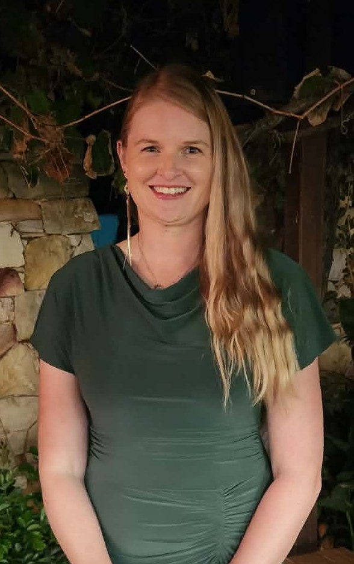

Brittany J. Williams
About Me
My name is Brittany Williams, and I currently live in Perth, Western Australia, although I originally come from New Zealand. I am a stay-at-home mum to three amazing children and homeschool my two oldest. I love Jesus Christ and His gospel, doing family history and attending the temple as much as possible. I enjoy learning new things and I am excited to be studying Software Development through BYU, as programming has been an interest of mine for a long time.

Perth, Western Australia

Western Australia is the largest state in Australia, situated on the left/west side. It takes up about one third of Australia and has approximately 3 million people living in the state. The capital city is Perth, although there are a lot of smaller cities and towns. It has a large desert and multiple mines from iron, coal and gold spread in different areas.